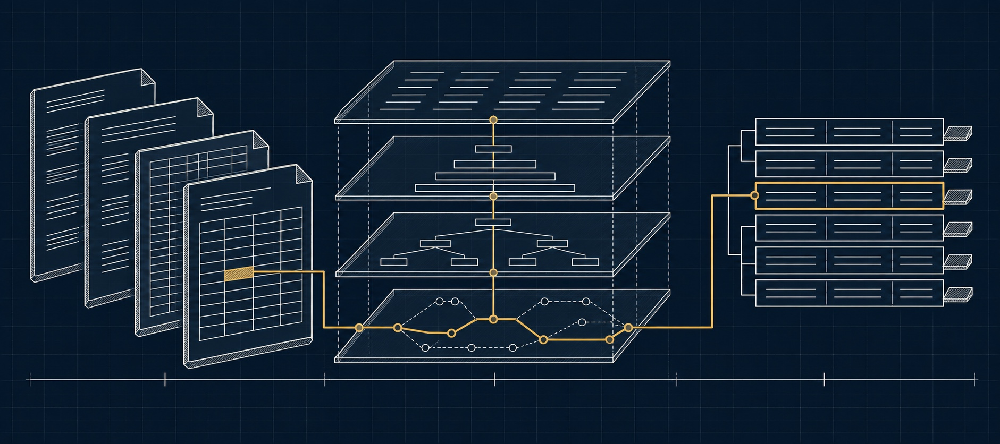

cc — Context Compiler
Build the knowledge base as you use it.
Context Compiler is a small, standalone Python library that runs inside your research application. It turns definitions your analysts approve and the evidence behind them into context for the next question.
Explore cc
- Source evidence
- Quarterly filing, earnings release, broker estimates, transcript
- Compiler
- Meaning, authority, dependencies, Attention
- Context
- Required and supporting evidence, coverage, source handles
In the investment example, a reported deposit cost travels with the interest expense and average deposit balances it is computed from. Each selected figure links to its source.